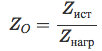

Применение диаграммы Смита при согласовании устройств
Электрические параметры электрических компонентов и схем изменяют входные сигналы по величине и фазе.
Любой синусоидальный сигнал, поступающий на вход, появится и на выходе устройства на той же самой частоте.
Новых сигналов при этом не создается. Как активные, так и пассивные нелинейные устройства могут сместить
входной сигнал по частоте или внести дополнительные частотные компоненты, например, гармоники или
нежелательные комбинационные составляющие. Мощные входные сигналы могут изменить характер работы
линейных устройств, приводя к компрессии или насыщению и вызывая нелинейный эффект.
Для того чтобы успешно передавать или принимать радиочастотную мощность, передающие устройства, такие
как тракты передачи, антенны или усилители, должны отличаться хорошим согласованием сопротивления с
источником сигнала. Рассогласование сопротивления происходит, когда реальные и мнимые части входного и
выходного импеданса не идеально согласованы между двумя связанными устройствами.
Важность векторных измерений.
Анализ радиочастотных цепей подразумевает измерение падающей (Transmitted), отраженной (Reflected) и
переданной (Incident) волны в тракте передачи. Используя в качестве аналогии оптику можно сказать, что свет,
падающий на чистую линзу, представляет собой падающую волну, а часть света которая отражается , это -
отраженная волна. Большая же часть света, определенным образом преломляясь, проходит через линзу,
и это – переданная энергия. Если линза имеет зеркальную поверхность, то большая часть света отразится,
и передано будет мало энергии или же вообще никакой. Хотя длины волн в оптике отличны от радиочастотных
сигналов, принципы здесь те же самые. Анализаторы цепей позволяют точно измерять падающую, отраженную
и переданную энергию, иными словами, энергию, которая подается на вход тракта передачи, энергию, которая
отражается на источник сигнала (из-за рассогласования сопротивлений), и энергию , которая успешно
передается на конечное устройство, например, на антенну.
В терминологии векторного анализа цепей падающая волна обычно обозначается как R. Отраженная волна
измеряется на порте A, а переданная волна – на порте B. Имея информацию об амплитуде и фазе этих волн,
оказывается возможным измерить характеристики отражения и передачи тестируемого устройства.
Относительные измерения позволяют проводить исследования отражения и передачи, которые не зависят от
абсолютной мощности или от изменений в мощности источника по отношению к частоте. Относительное отражение
часто представляется в виде A/R, а относительная передача как B/R.
Самый общий термин для относительного отражения – это комплексный коэффициент отражения, или
Γ – гамма. Коэффициент отражения – это просто отношение уровня напряжения отраженного сигнала к уровню
напряжения падающего сигнала.
Амплитуда величины Γ называется ρ ( ро ). Например, в тракте передачи, идеально согласованном с нагрузкой
по сопротивлению ZO, вся энергия будет передаваться, так что ρ=0. Когда сопротивление нагрузки
Zнагр не равно сопротивлению тракта передачи ZO, то часть энергии отражается и ρ больше нуля.
Когда сопротивление нагрузки равно ”короткому замыканию” или ”холостом ходе”, вся энергия отражается и ρ
равно 1. Как видим , диапазон возможных значений для ρ – это 0...1.
Обратные потери (return loss или RL)– это способ выражения коэффициента отражения в логарифмическом
виде (децибелах). Обратные потери – это количество децибелов, на которое уровень отраженного сигнала
ниже уровня падающего сигнала по мощности P или напряжению V (чем больше величина return loss, тем
лучше согласование). Обратные потери всегда выражаются положительным числом и изменяются в пределах
от бесконечности для идеально согласованного тракта передачи до 0 дБ при ”коротком замыкании” или
”холостом ходе”.
Другой общий термин для оценки отражения – это коэффициент стоячей волны по напряжению или КСВ
(VSWR), а также его обратная величина коэффициент бегущей волны КБВ. Он определяется как отношение
максимума огибающей сигнала к ее минимуму. Через ρ он выражается как (1+ρ)/(1-ρ). Диапазон значений КСВ:
от 1 (отражения нет) до бесконечности ( полное отражение ). Коэффициент передачи определяется как
отношение переданного напряжения к падающему напряжению. Если абсолютное значение переданного
напряжения больше, чем абсолютное значение падающего напряжения, то в тестируемом устройстве мы
имеем усиление. Если абсолютное значение переданного напряжения меньше, чем абсолютное значение
падающего напряжения, то в тестируемом устройстве мы имеем затухание либо вносимые потери.
Параметры передачи и отражения могут быть представлены в векторном виде (фаза и амплитуда), скалярном
виде (только амплитуда ), а также только как фаза. Например, обратные потери (return loss) – это скалярное
измерение отражения, в то время как сопротивление – это векторное измерение отражения.
Для того чтобы полностью исследовать неизвестное линейное двух портовое устройство, мы должны провести
измерения при разных условиях и вычислить целый ряд параметров . Эти параметры могут использоваться для
полного описания электрического поведения вашего устройства (цепи), даже если источник и нагрузка окажутся
отличными от тех , при которых производились измерения.
Поскольку на высоких частотах трудно измерить абсолютные значения напряжения и тока, обычно вместо них
измеряются S-параметры. Эти параметры соотносятся с уже знакомыми нам понятиями, такими, как усиление,
потери и коэффициент отражения. Их относительно легко измерить, кроме того, они не требуют подключать
к тестируемому устройству дополнительные, нежелательные нагрузки. Измеренные S-параметры нескольких
устройств в системе можно сложить для того, чтобы понять, как будет работать вся система в целом. Количество
S-параметров равно квадрату количества портов. Например, двух портовое устройство имеет четыре S-параметра.
Нумерация S-параметров осуществляется по следующему принципу: первая цифра указывает порт, на который
энергия приходит , а вторая – порт, на который она первоначально подается. Так, S21 это результат измерения
мощности, приходящей на порт 2 в результате подачи на порт 1 радиочастотного сигнала . Когда цифры
совпадают (например , S11), речь идет об измерении характеристики отражения. Прямые S-параметры
определяются путем измерения модуля амплитуды и фазы падающего, отраженного и переданного сигналов,
когда на выходе источника мы имеем нагрузку, точно согласованную с сопротивлением тестируемой системы .
В случае двух портовой цепи (четырехполюсника) S11 является комплексным коэффициентом отражения или
импедансом тестируемого устройства DUT (Device Under Test) - коэф-т отражения от входа, при условии, что
нагрузка на выходе энергию не отражает, а S21 – комплексным коэффициентом прямой передачи (коэф-т
передачи "падающей волны" от входа к выходу).
Если мы подадим сигнал на выход тестируемого устройства, а на вход поместим согласованную нагрузку, то мы
сможем измерить два другие (обратные - reverse) S-параметры. Параметр S22 равен выходному комплексному
коэффициенту отражения или выходному сопротивлению тестируемого устройства, а S12 – это комплексный
коэффициент обратной передачи (коэф-т передачи от выхода к входу).
Диаграмма Смита
Диаграмма Смита построена основываясь на стандартной формуле коэффициента отражения (в зависимости
от сопротивлений источника и нагрузки): Набор окружностей на диаграмме получен по значениям этой
формулы, и центры окружностей находятся в разных местах на графике или за его пределами, и каждая
из которых представляет собой либо постоянное активное сопротивление, либо постоянное реактивное
сопротивление.
После простого преобразования эту формулу можно представить как
, где

Напомню, что ZO является комплексным значением импеданса и может быть
представлено в виде R + jX. Так как коэффициент отражения (который обычно представлен в полярной
форме) может быть также представлен и в прямоугольных координатах (для этого мы будем использовать
A + jB), приведенная выше формула может быть преобразована в следующую:
Теперь посмотрим, как строится диаграмма Смита. Она состоит из окружностей постоянного активного
сопротивления A
и дуг постоянного реактивного сопротивления B.
Ниже вы можете увидеть упрощенное изображение (базовая диаграмма Смита) постоянного активного и
реактивного сопротивления вместе.
Как интерпретировать диаграмму Смита? Вот несколько моментов, на которые стоит обратить внимание:
Точка в центре имеет чисто активное сопротивление R = Z ;

При X = 0 дуга реактивного сопротивления будет иметь бесконечный радиус; это соответствует
горизонтальной линии, пересекающей центр диаграммы. Эту линию часто называют действительной осью.
Касательно реактивного сопротивления, линии выше действительной оси на диаграмме представляют
собой индуктивные реактивные сопротивления, а линии ниже– емкостные реактивные сопротивления;
при бесконечных R и X окружности активного сопротивления и дуги реактивного сопротивления сходятся
в одном месте на крайней правой точке; При R = 0 , точка на диаграмме в крайней левой точке;
окружности вокруг центра диаграммы соответствуют сопротивлению для соответствующего постоянного КСВ;

Полный круг по любому диаметру диаграммы соответствует повороту фазы на 180 градусов, а
расположенные диаметрально противоположные точки соответствуют повороту фазы на 90 градусов.
Это замечание полезно тем, что позволяет использовать кабели определенной длины для согласования
импедансов. Поскольку кабель электрической длиной λ/2 поворачивает фазу на 180 градусов, то на
диаграмме Смита такой элемент возвращает точку в исходное состояние не трансформируя ни активное,
ни реактивное сопротивление. Кабель электрической длиной λ/4 поворачивает фазу на 90 градусов и
на диаграмме Смита такой элемент трансформирует сопротивление симметрично относительно центра
диаграммы и трансформирует сопротивление в зависимости от Zтp кабеля, которое можно рассчитать
из формулы Zтp = квадратный корень из (ZBx · ZВых) .
На основе знаний, которые у нас теперь есть, об активном и реактивном сопротивлениях на диаграмме,
мы знаем, что каждая точка представляет собой последовательную комбинацию активного и реактивного
сопротивлений (R + jX). Перемещение вдоль окружности равного активного сопротивления по часовой
стрелке означает увеличение положительного реактивного сопротивления, т.е. введение индуктивности.
А перемещение вдоль окружности равного активного сопротивления против часовой стрелки означает
уменьшение положительного реактивного сопротивления, т.е. введение емкости. Перемещение вдоль дуги
равного реактивного сопротивления против часовой стрелки в верхней полуплоскости и по часовой стрелке
в нижней полуплоскости означает увеличение активного сопротивления.
До сих пор мы не упоминали о комплексной проводимости на диаграмме Смита. Если вы не знаете, то
комплексная проводимость (адмиттанс) является величиной, обратной комплексному сопротивлению
(импедансу), или Y=1/Z Активное и реактивное сопротивления в этом случае соответствуют активной и
реактивной проводимостям. На самом деле, построить аналогичную диаграмму для проводимостей
удивительно просто – всё, что вам нужно сделать, это отразить диаграмму сопротивлений по горизонтали.
Подобное преобразование очень важно, так как теперь у вас есть диаграмма, которая поможет вам при
работе с шунтирующими компонентами (включенными между корпусом и линией связи, параллельно
источнику и нагрузке), а не только с включенными последовательно. Процесс нанесения проводимости на
диаграмму противоположен – при добавлении индуктивности в цепь последовательно необходимо перемещать
значение импеданса по часовой стрелке вдоль окружности постоянного активного сопротивления, а при
добавлении шунтирующей индуктивности (включенной параллельно) необходимо перемещаться против
часовой стрелки вдоль окружности постоянной активной проводимости; аналогично и с конденсаторами,
шунтирующий конденсатор перемещает ваши значения по часовой стрелке на диаграмме комплексной
проводимости, а конденсатор, включенный последовательно, – против часовой. Сочетание обоих типов
диаграмм даст вам то, что называется диаграммой комплексных сопротивления и проводимости (иммитанса),
которая становится еще более полезной, чем стандартная диаграмма Смита, хотя она и будет выглядеть
более устрашающей для тех, кто не знает, как она была создана.
Положительные значения характеризуют емкостную проводимость , а отрицательные – индуктивную.
Перемещение вдоль дуг равной реактивной проводимости по часовой стрелке в верхней полуплоскости
и против часовой стрелки в нижней полуплоскости означает увеличение активной проводимости.
Перемещение вдоль окружности равной активной проводимости по часовой стрелке означает увеличение
положительной реактивной проводимости, т.е. введение ёмкости. А перемещение вдоль окружности равной
активной проводимости против часовой стрелки означает уменьшение положительной реактивной
проводимости, т.е. введение индуктивности.

Согласующие звенья
Имеется всего восемь возможных вариантов комбинаций согласующих звеньев из реактивных элементов
(индуктивность, емкость).
Каждое из этих восьми звеньев способно трансформировать комплексное сопротивление нагрузки в
активное сопротивление заданной величины. Значение трансформируемых сопротивлений,
соответствующих каждому звену, можно условно представить на круговой диаграмме в виде импедансов,
изменяющихся в ограниченной области. На каждой из диаграмм показана заштрихованная область
("недосягаемая зона”) . Если желаемое сопротивление нагрузки оказывается в пределах "недосягаемой
зоны”, то эта нагрузка не может быть трансформирована в Z выбранным типом согласующего звена.
В этом случае необходимо попробовать использовать другой тип согласующего звена из оставшихся семи.
Согласование импедансов с помощью круговой диаграммы
Пример: Требуется согласовать на частоте 435 МГц комплексное сопротивление нагрузки Zн = Rн + jXн ,
представленное на диаграмме точкой 1, с источником сигнала, имеющим внутреннее сопротивление 50 Ом.
Для того чтобы попасть из точки 1 в точку 3, расположенную на окружности активного сопротивления
50 Ом , необходимо проделать следующие манипуляции.
1 Параллельно нагрузке подключаем конденсатор. Параллельное подключение означает введение
проводимости, поэтому дальнейшее перемещение будет осуществляться по окружности активной
проводимости, проходящей через точку 1, по часовой стрелке. Эта окружность соответствует величине
активной проводимости 0,008 См.
2 Величина емкости конденсатора выбирается такой, чтобы попасть в точку 2 на окружности активного
сопротивления 50 Ом. Это будет соответствовать равенству активной составляющей полученной
комплексной нагрузки и внутреннего сопротивления источника сигнала .
3
Для получения чисто активного сопротивления последовательно с нагрузочной цепью подключаем
индуктивность, величина которой равна и противоположна по знаку реактивности в точке 2.
Подключение производится последовательно, поэтому дальнейшее перемещение в точку 3
осуществляется по окружности активного сопротивления 50 Ом по часовой стрелке.
В качестве варианта решения этого примера подумаем, как можно иным способом попасть из точки 1
в точку 3, расположенную на окружности активного сопротивления 50 Ом.
Для этого можно проделать следующие манипуляции.
1 Параллельно нагрузке подключаем индуктивность. Параллельное подключение означает введение
проводимости , поэтому дальнейшее перемещение будет осуществляться по окружности активной
проводимости 0,008 См , проходящей через точку 1, но против часовой стрелки.
2 Величину индуктивности выбираем такой, чтобы попасть в точку 2 на окружности активного
сопротивления 50 Ом . Это будет соответствовать равенству активной составляющей полученной
комплексной нагрузки и внутреннего сопротивления источника сигнала.
3. Для получения чисто
активного сопротивления последовательно с нагрузочной цепью подключаем конденсатор , величина
емкости которого равна и противоположна по знаку реактивности в точке 2. Подключение производится
последовательно, поэтому дальнейшее перемещение в точку 3 осуществляется по окружности активного
сопротивления 50 Ом, против часовой стрелки. В точке 2 сопротивление равно Z = 50 + j 61,237 Ом.
Согласовать указанную в предыдущем примере нагрузку можно с помощью параллельного разомкнутого
шлейфа на основе отрезка линии и четвертьволнового трансформатора.
Выполним следующую последовательность действий .
1 Вводим параллельно нагрузке разомкнутый шлейф на основе отрезка линии. Внутреннее сопротивление
отрезка линии должно иметь емкостной характер. Параллельное подключение означает введение
проводимости, поэтому дальнейшее перемещение будет осуществляться по окружности активной
проводимости 0,008 См , проходящей через точку 1, по часовой стрелке.
2 Длину отрезка линии подбираем такой , чтобы попасть в точку 2 на действительной оси. Это будет
соответствовать чисто активной составляющей внутреннего сопротивления полученной нагрузки
величиной 125 Ом.
3 Последовательно в цепь включаем четвертьволновый трансформатор с волновым сопротивлением
На заметку . В данном случае указанную нагрузку можно согласовать введением только одного отрезка
линии, путём подбора длины отрезка и волнового сопротивления.
И, наконец, о том , как практически пользоваться возможностями диаграммы Смита. Для удобства работы
с этим инструментом существует множество программ. Например программа SimSmith позволяет моделировать
цепочки из согласующих цепей со сканированием по частоте и с отображением результатов как в
обычном виде - в виде КСВ в зависимости от частоты, так и в виде диаграммы Смита.
Необходимые согласующие цепи выбираются из отмеченных на экране программы (слева внизу)
и простым "перетаскиванием мышкой" могут быть помещены в вашу модель согласующей цепи
(слева вверху). Сразу автоматически расчитываются необходимые номиналы компонентов
(их можно корректировать вручную) и отображается результирующие параметры всех цепей.
Полную информацию об использовании программы можно почерпнуть из видео материалов на
странице автора программы.
|